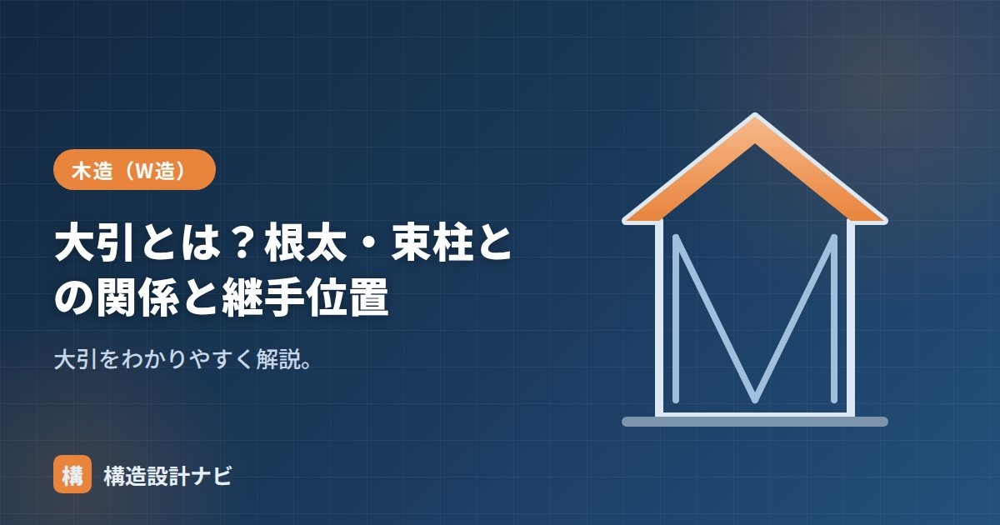

大引とは？根太・束柱との関係と継手位置

大引（おおびき）とは、床組において根太を下から支える横材のことです。1階の床を支える主要な部材で、床にかかる荷重を根太から受け取り、土台や床束へと伝える役割を担います。地味な部材ですが、大引のサイズや間隔、継手の位置を誤ると床鳴りや床のたわみといった不具合につながるため、床組の設計・施工では要となる材の一つです。
- 大引は根太を支える横材で、90mm角程度の断面が一般的
- 「床板→根太→大引→床束→基礎」の順に荷重が伝わる
- 継手は力が小さくなる床束の真上付近に設けるのが基本
大引とは・使う木材
大引は、根太の下に直交して渡す角材です。90mm角（90×90）程度が一般的で、樹種はヒノキ・ヒバ・ベイマツなどが使われます。土台と床束で支えられ、根太よりも太い断面で長いスパンを渡すため、床組全体の剛性・耐久性を左右する部材です。近年は防腐・防蟻処理を施した木材や、腐朽・シロアリの影響を受けにくい鋼製大引が使われることもあります。
根太・束柱との関係
- 根太：大引の上に直交して載り、床板を支える。
- 床束（束柱）：大引を下から支える短い束。おおむね910mm間隔。
床束は、木製束のほか、施工性・耐久性に優れる鋼製束（プラ束）が近年主流です。鋼製束は高さ調整ができるため、床の水平精度を出しやすく、施工後の乾燥収縮による床鳴りも抑えやすいという利点があります。大引と根太、それぞれの太さ・間隔がなぜ異なるのかといった詳しい比較は「大引と根太の違い」で解説しています。
継手位置
大引を長手方向につなぐ継手は、床束の真上付近に設けるのが基本です。継手は曲げに弱いため、力の小さい支点（束）の近くで継ぐことで、たわみ・外れを防ぎます。
継手の形式には、腰掛け蟻継ぎや腰掛け鎌継ぎなどが用いられ、上から荷重がかかっても外れにくいよう工夫されています。スパンの途中（束と束の中間）で継ぐと、その位置に曲げモーメントが集中して継手が開いたり、床のたわみ・床鳴りの原因になったりするため避けるべきとされています。
施工上の注意点
大引は土台に近く湿気の影響を受けやすい部材です。床下換気が不十分だと大引や床束が腐朽・蟻害を受けるおそれがあるため、床下換気口の確保や、近年主流の基礎パッキン工法による床下換気計画も合わせて確認しておくとよいでしょう。
Q1. 大引を省略できる工法はありますか。
厚い構造用合板を根太・大引を介さず梁に直接張る「根太レス工法」でも、1階の床では大引に相当する横架材を設けることが一般的です。1階の床組で大引そのものを省略することは基本的にありません。
Q2. 大引のスパンが長い場合はどうしますか。
大引が長いスパンを渡す場合は、床束の間隔を詰めて支点を増やすか、大引自体の断面を太くしてたわみを抑える対応が取られます。設計段階でスパン・荷重条件を確認し、適切な断面と間隔を選ぶことが、床の使用時のたわみやきしみを防ぐポイントです。
新築の完了検査で、大引の継手がちょうど束の中間に来ているのを見つけたことがあります。鋼製束は高さ調整が自由なぶん、施工中に位置がずれても気づかれにくいのが盲点です。図面と現地の継手位置は必ず照らし合わせるようにしています。
まとめ
- 大引は根太を支える横材。90mm角程度で土台・床束が支える。
- 「床板→根太→大引→床束→基礎」で力を伝える。
- 継手は床束の真上付近に設けるのが基本。
- 湿気の影響を受けやすいため、床下換気の確保も重要。